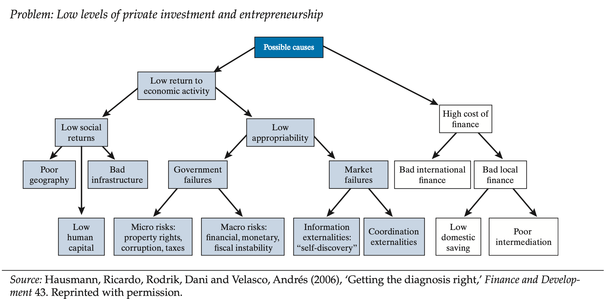

HRV Growth
Hausmann-Rodrik-Velasco (HRV) attempt to identify the greatest hindrance to growth for each developing nation
- Broadly speaking, low growth is caused by low return on investment or a high-cost of borrowing
- Low returns on investment are the result of poor productive capability or low returns due to institutional failure
- HRV propose a decision tree framework to focus on a country’s most binding constraints on economic growth
- By targeting the most binding constraint produces advangates over other approaches to policy selection

HRV - Four Principles of Differntial Diagnosis
1. The Shadow Price of the Constraint is High
2. Movements in the constraint produce significant movement in the objective
3. People attempt to overcome or bypass the constraint
4. Agents less intensive in a binding constraint are more likely to thrive
HRV - Four Principles
1. The Shadow Price of the Constraint is High
A Binding Constraint on growth is one where relaxing it would yield large benefits. Meaning its shadow price (the implicit value of easing the constraint) is high
- If something is scarce because of low supply rather than low demand, it is likely a true contraint
- Ex: If credit is limited and interest rates are high, even though many agents want to borrow, financial access is binding
- If little borrowing occurs because agents do not see high returns, then fincance is not a binding issue
- Clues come from high observed returns, rationing, congestion, or other indicators that an input is in short supply
If we could ease this bottleneck, would growth respond strongly?
If yes, then it is probably a key constraint
HRV - Four Principles
2. Movements in the constraint produce significant movement in the objective
If something is truly binding, then changes in it should move the economy’s main outcomes.
- If we suspect that limited access to credit constrains investment, then lowering real interest rates or improving access to loans should incrase investment
- The relationship should be clear and consistent
- When the constraints bites harder, outcomes worsen
- When it eases,outcomes should improve
This principle checks the sensitivity of the constraint.
If chaniging the variable does not affect performance much, it is probably not the real bottleneck
HRV - Four Principles
3. People attempt to overcome or bypass the constraint
Economic actors do not passively accept constraints, they adapt or find workarounds.
- When things fail, agents might invest or find in alternatives
- The power grid fails often, so agents invest in generators to overcome unreliable electricity
- If crime is high, agents might invest in private security
- If taxes are too much or unreasonable, business might shift toward cash only
- By observing coping mechanisms, we can better identify what the economy’s main problems are
If agents spend a lot of effort or resources getting around certiain limitations, that limitation is likely binding
HRV - Four Principles
4. Agents less intensive in a binding constraint are more likely to thrive
If a constraint is binding, agents that participate less or are less exposed to it will perform better.
- If a contraint does not directly (or it is less prevalent) affect your action, then the agent is not as limited
- Ex: If infrastructure is the issue, exporting firms near a port may grow faster than inland producers
- Ex: If political corruption is the main concern, then agents that are politically connected will succeed while others stagnate
This principle checks the variation within the economy, which agents grow and which do not?
The presence (or absence) of thriving sectors reveals a lot about what is holding back the rest of the economy.
Why are the successes succeeding, and the failures failing.